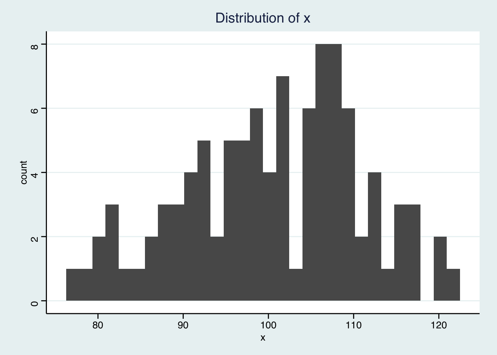

| variable | mean | sd | minimum | maximum | counts |
|---|---|---|---|---|---|
| z | NA | NA | NA | NA | 0: 56, 1: 44 |
| x | 100.6 | 10.48 | 77.16 | 121.8 | NA |
| y | 0.45 | 0.5 | 0 | 1 | NA |
Categorical Model Paper Template
1 The Relationship of A and B to C
Alternative title ideas: “Predictors of _____”;
“An Analysis of ____”
2 Introduction
Why is this an important problem? Are a large number of people affected by A? Are a large number of people affected by B? Are a large number of people affected by C? Are these effects particularly severe? Are populations affected by A, C or B particularly underserved? Is there evidence to suggest a relationship between these factors, or is this relationship under-examined?
What do we know about the nature of this question already?. Here, please review 3-5 articles that discuss the importance of one factor by itself, or some relationship of the factors.
(Author, date) studied (sample) to examine (research question). (Author, date) found that ______________. (Author, date) also found that ______________. (Author, date) also found that ______________. However, one (strength/limitation) of the study was that __________________________. These authors suggested (policy, program, intervention, research strategy).
(Author, date) studied (sample) to examine (research question). (Author, date) found that ______________. (Author, date) also found that ______________. (Author, date) also found that ______________. However, one (strength/limitation) of the study was that __________________________. These authors suggested (policy, program, intervention, research strategy).
(Author, date) studied (sample) to examine (research question). (Author, date) found that ______________. (Author, date) also found that ______________. (Author, date) also found that ______________. However, one (strength/limitation) of the study was that __________________________. These authors suggested (policy, program, intervention, research strategy).
(Author, date) studied (sample) to examine (research question). (Author, date) found that ______________. (Author, date) also found that ______________. (Author, date) also found that ______________. However, one (strength/limitation) of the study was that __________________________. These authors suggested (policy, program, intervention, research strategy).
(Author, date) studied (sample) to examine (research question). (Author, date) found that ______________. (Author, date) also found that ______________. (Author, date) also found that ______________. However, one (strength/limitation) of the study was that __________________________. These authors suggested (policy, program, intervention, research strategy).
3 Research Question
Given this review of the literature, my research question is ________________.
4 Methodology
NB: You don’t have to include everything I’ve listed here. Try for 70-90%.
4.1 Sample
- A simple demographic description of the sample.
- How was the sample selected and recruited and collected (were participants selected in some fashion? Could participants self-select into the sample?).
- How representative is the sample of other populations, the population of interest, or the population at large?
- Are there response rates that are important? (e.g. refusals to participate, non-returned questionnaires?)
- Was it a self-administered questionnaire or an interview?
- If an interview, was the interview in person or by telephone?
4.2 Measures
- What constructs are you measuring? What are your measures designed to measure? Where are they from; who created them?
- Any information that you can find—and that you think is appropriate—on the reliability and validity of your measures. (If you are using secondary data, you will need to paraphrase the information from an existing publication or report.)
- Reliability: Is there any information on test-retest, inter-rater, inter-item reliability? How is this information relevant to your study?
- Validity
- Face validity: In looking at the items, what can you conclude about its content (or face) validity? In other words, in your judgment, do the items seem to reflect the purpose of the measure?
- Predictive or concurrent validity: Is any information on these types of validity available?
- How is information on validity relevant to your study?
- Cronbach’s alpha for any scales that you construct.
- Response format used, e.g. “true/false”, “Likert scale of 7 points from strongly agree to strongly disagree”
- Type of measure: nominal, ordinal, interval/ratio
4.3 Design
- What type of research design are you using? Experimental, Quasi-Experimental or Non-experimental (Observational)?
- Is selection into different treatments or conditions random or nonrandom? Do individuals select themselves? Do others select them on the basis of their clinical status? What implications does this have for your study?
- Are you introducing any control variables into your design?
- Is your study longitudinal or cross-sectional?
- If your study is longitudinal, is your research design prospective or retrospective?
4.4 Analysis
- What type of analysis did you employ?
- Why was this analysis appropriate?
- What did this analysis accomplish that simpler forms of analysis might not have?
5 Results
Tell me in words how your variables are distributed in your sample and include a table.
A hypothetical example. If my variables are continuous, it’s appropriate to show means. If some of my variables are categorical, it’s more appropriate to show frequency distributions.
In order to format my results nicely, I could copy them into Excel first, format them, and then copy them into Word. There are also some newer ways to make nicely formatted tables in Stata.
In the graphs, note that I’ve tried to pay some attention to meaningful titles and axis labels.
Note also you can make use of one of Stata’s schemes to make your graphs visually interesting.
It’s also worth trying out the lean1 and lean2 schemes (type findit lean2 to install).
And the daring are welcome to try my “Michigan” graph scheme, available here, caveat emptor.

What is the influence of each predictor variable in your relationship in terms of \(\beta\) and p value?
| y | ||||
| Predictors | Odds Ratios | std. Error | Statistic | p |
| x | 0.61 | 0.07 | -4.35 | <0.001 |
| z [1] | 1.41 | 1.11 | 0.43 | 0.666 |
| Observations | 100 | |||
6 Discussion
Briefly recapitulate or summarize briefly the results in written form. Do your results support the hypothesis or inform the research question or the discussion in the literature? How so or why? Do your results say anything about causal connections between your two measures? Are your results congruent with any theory about causal connections between your two measures? Can you demonstrate associations that are not necessarily causal? What are the implications for practice, interventions, policy or further research? Do your findings suggest anything about particular policies or programs that should be implemented, funded or continued? Are there gaps in the research that suggest further research is needed? What are the limitations of the methods used? i.e especially given that you are not examining all of the predictors that are theoretically relevant, are there are other variables that should be considered in future, more complicated research?
7 Conclusion
usually 1 paragraph
8 References
Jones & Smith. (2006). Further really amazing results. Amazing Results Quarterly, 15(2), 246-280.
Smith, & Jones. (2006). Some very important policy stuff. The Journal of Very Important Policy Stuff, 1(1), 1-2.
Smith, & Jones. (2007). Some very important developmental stuff. The Journal of Very Important Developmental Stuff, 1(1), 1-2.
Jones & Jones. (2008). Stuff we forgot to say in our earlier articles. Extremely Sophisticated Quantitative Analysis, 5(7), 1-25.
Smith, & Smith. (1990). Stuff that we hope will be important some day. The Journal of Heretofor Unanticipated Results, 1(1), 1-2.